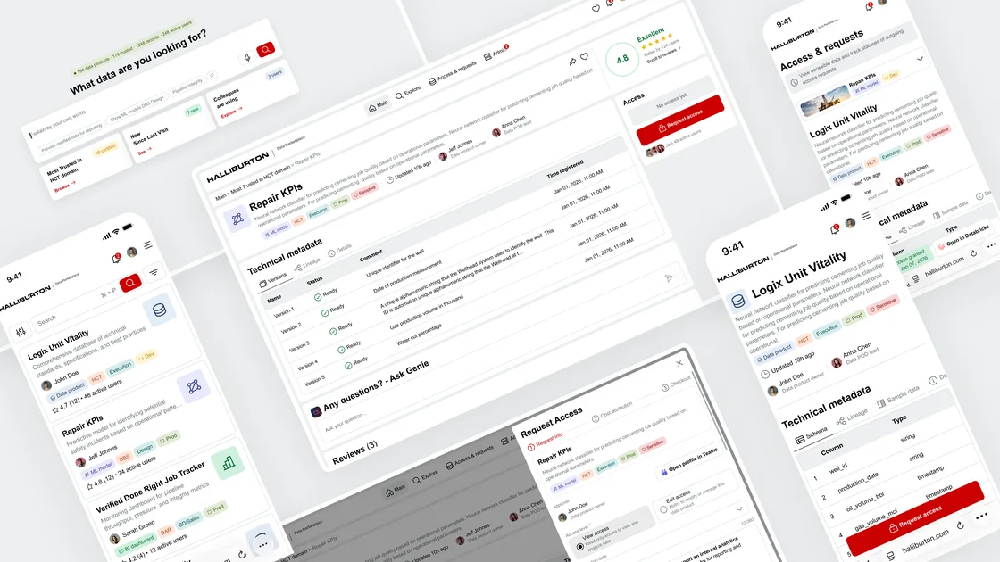
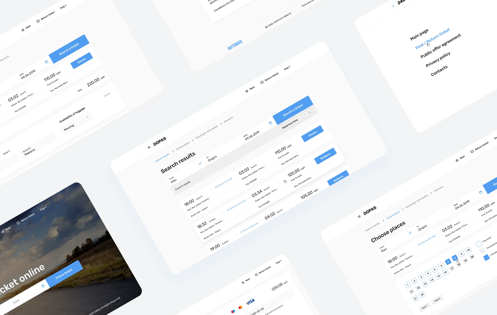

Currently building through an AI-native design-to-code pipeline.

Cut data search from weeks to minutes
Built solo, shipped to App Store
Cut booking time 40% in usability tests

Launched from zero, now generating revenue